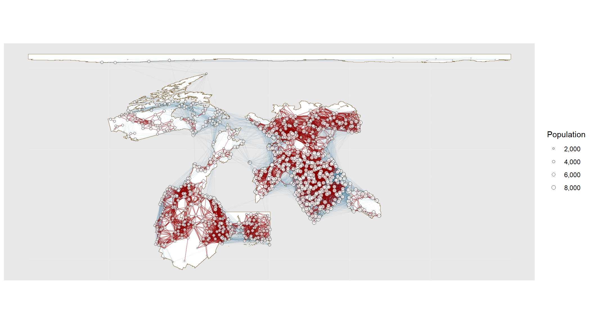
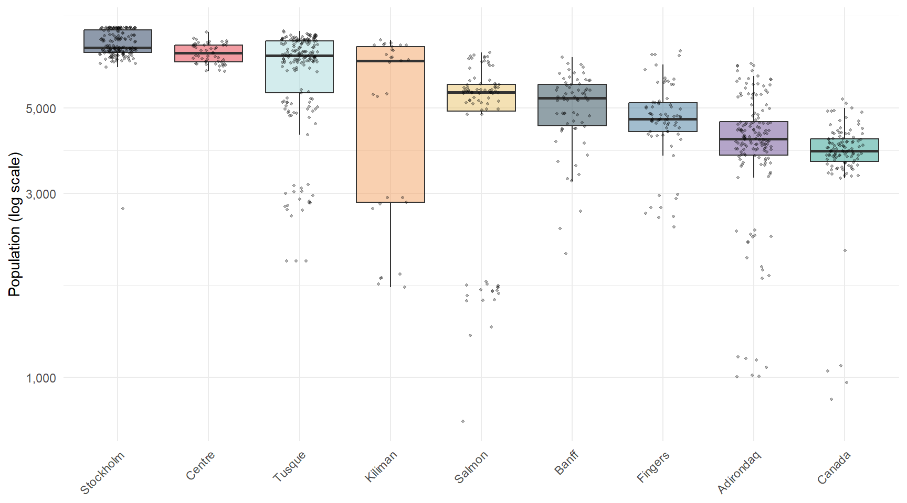
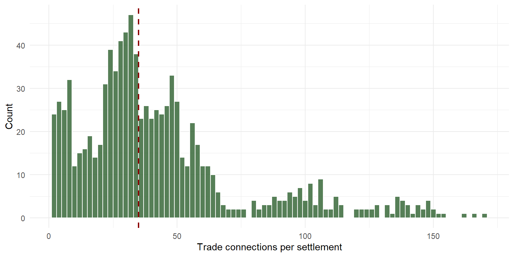
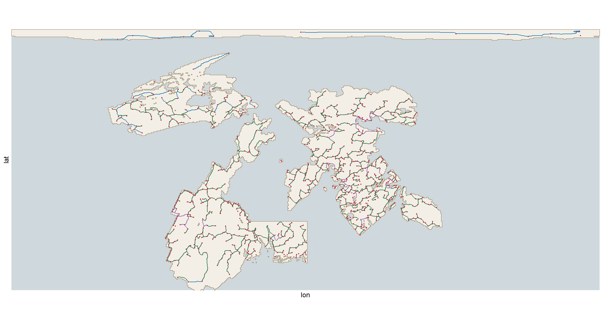
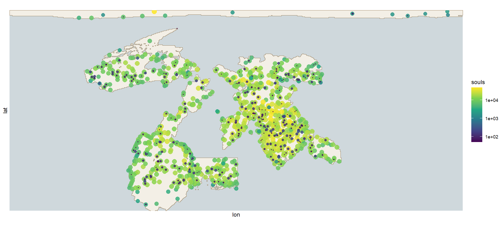
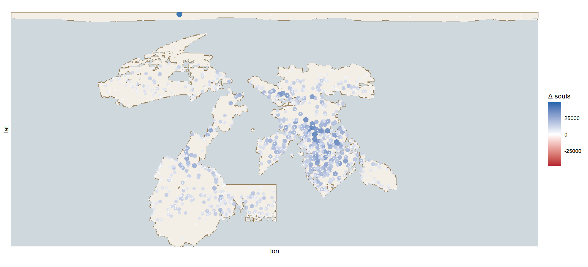

10 Trade and Connection
10.1 Of the Roads of the World, Which I Do Not Understand
I have walked upon more roads than I can rightly count — roads of packed earth and roads of river-mud, roads along ridgelines in the clouds and roads that hugged the shore so close the spray salted my lips as I went. And I will say at the outset what a more careful writer would bury at the end: of everything in this book, the roads have cost me the most labour and yielded me the least understanding. I have a rule for where towns stand and I am satisfied with it. I had four rules for the roads. I have thrown away three, and I am not easy about the fourth.
What I can say without hesitation is that nobody made them. There are no princes upon EART-H whose writ outlasts a single turning of the moons, and so there is nobody to decree a highway and nobody to maintain one. The roads are worn. They are the accumulated preference of ten thousand merchants and pilgrims, each choosing, on the day, the least miserable way from here to there — and the sum of ten thousand small selfishnesses turns out to look remarkably like a plan, which is the first of the several things about roads that I find unsettling.
That trade must happen at all is the one part of this easily explained. The moons move, and the green things follow them, so that a valley heavy with fruit this season stands bare the next. No town on this world can eat only what it grows. A settlement that cannot trade does not become poor; it becomes empty, and I have walked through several that made the discovery too late.
10.2 Of the Inner Sea, and of Doors
The merchants of the inner sea have a saying that a league of water is worth six of road, and having checked it against my own ledgers over many years I can report that they are close enough to right that I have stopped arguing. Six. A cargo that would break forty oxen over a fortnight of passes goes aboard one hull and arrives while the oxen are still being harnessed. I have been three times shipwrecked and once spent four days on a spar before a Salmon fishing boat took me off, and I still say six.
But here is the part that no one told me and that took me years of ruined reckonings to see. The sea is cheap and the sea has doors. You cannot simply walk your goods to the water’s edge and float them. Between a beach and a cargo there lies the whole apparatus of a port — the quay, the crane, the pilot who knows the bar, the harbourmaster who will vouch for you — and where that apparatus is absent the sea might as well be a cliff. There are perhaps a few dozen places upon each coast where land and water actually meet in a way that permits goods to pass between them. Everywhere else they merely touch.
So the map of the trading world is not a map of coastline. It is a map of doors, and the coastline between them is as impermeable as the mountains. I have watched a town starve within sight of the sea because it had a beach and not a harbour, while a town eleven leagues inland grew fat on the strength of the river-mouth quay it owned.
Grant the doors, though, and the reach doubles. A merchant who takes to the water can deal with partners twice as far off as one confined to the land — a rule I have tested in four seas and never seen broken. This is why the inner sea is the commercial heart of the world: that sheltered expanse bounded by Banff, Adirondaq, the Fingers, Centre and Tusque, where every shore is somebody’s neighbour. Bulk moves there as freely as luxury — Banff timber, Tusque grain, Adirondaq stone — because six-to-one makes even the cheapest cargo worth a voyage. And Centre, sitting at the navel of the navigable world, has the thickest traffic and the largest towns upon EART-H, for no reason more romantic than that everyone must pass it.
10.3 Of What Travels How Far
The old rule, and it holds: the further a thing goes, the lighter and dearer it must be. Between towns a day or two apart the carts carry grain, timber, clay, salt and whatever was dug or picked that week. A week apart and it is worked metal, dyed cloth, cured meat, medicine. Across an ocean it is essences, relics, news, and things whose whole value is that they came from far away.
The rule holds on land. Upon water it collapses entirely, and this is the single fact that shapes the wealth of EART-H. A ship creeping from port to port along a shore, never out of sight of the beach, will carry bulk grain one week and silk the next and make money on both, because six-to-one turns a luxury route into a bulk route. The towns of the inner sea are large not because their people are cleverer but because they have cheap carriage for everything rather than for precious things only.
Now the rivers. I had thought them a lesser sort of road and I was wrong. A navigable river — and by navigable I mean one that will float a laden barge, which is a much rarer thing than one that will float a boy — runs at very nearly the speed of the sea. Five leagues to one, by my own reckoning, against a road. What this means is not obvious until you have seen it: a river is the sea reaching inland. A town two hundred leagues from any coast, sitting on good water, trades like a port and grows like a port, and its neighbour thirty leagues away across a low ridge, with no river, trades like a mountain village. I have stood in both on consecutive days and I could not have told you, from the country, which would be which.
And so the network of this world is not spread evenly across it. It is a thing of coasts and rivers, and the deep interior is largely outside it — the high country of Adirondaq, the dry plains far from any barge-water. Those places trade with their neighbours or not at all. I want to record that I did not find them miserable. I found them self-contained, which is a different thing: places that have never tasted salt from another shore, nor seen a colour their own plants do not make, and do not feel the lack the way a visitor feels it on their behalf.
10.4 Of Hinterlands, and of the Country Between
Every trading town commands a hinterland — the ground it draws food, timber and people from, which is also the ground whose young folk it takes and whose prices it sets. A great port commands a vast one. A mountain town commands its own valley and not the next.
Between the hinterlands lies country that belongs to no market at all: the high passes, the deep forest, the dry waste, the cold tundra — what the geographers of old would have called Zomia. It is not empty. Hunters live there, and hermits, and whole communities who have looked carefully at what a market offers and declined it. But no town reaches them, no road is worn to them, and no lord counts them. On my charts they are the white space between the ink, and I have learned to distrust my own instinct to read white space as absence.

10.5 Of the Lands Beyond the Inner Sea
Banff has the luck of the world. It fronts the inner sea and it shares a landmass with Adirondaq and the Fingers, so that goods may pass between those three without ever going aboard anything. This is worth more than it sounds. Every transfer between cart and hull is a place where cargo is dropped, taxed, stolen or delayed, and a route that needs none of them is worth a great deal of distance. Banff’s inward-facing ports are the western gate of that land bridge and they know it.
Stockholm and Kiliman sit further off and pay for it in crossing-time, but both keep vigorous fleets. Salmon, tucked among its larger neighbours, has made an entire prosperity out of being on the way to somewhere else.
Canada is the interesting case, and the one I would put to any student of these matters. It is enormous. It has a long coast. It touches the sea in many places. And it is nonetheless at the edge of everything, because its harbours face the wrong water and the crossings from them are long and cold. Its wealthy towns are not crossroads of the world; they are provisioners to their own vast back-country, growing rich on the traffic between a hinterland and a single southward door. A great deal of coastline, it turns out, is not the same as a great deal of connection.
10.6 Of Amazonia, Which the Roads Never Reach
Amazonia must be spoken of separately, because it is the one place in this book that the land routes do not touch at all. It sits under the northern ice; what grows there grows at the glacier’s hem. But its isolation is not merely a matter of cold. No road reaches Amazonia and none ever will, for there is no walkable ground between it and anywhere. Everything that arrives there arrives by hull, through a single northern harbour on the Canadian rim that exists for no other purpose, and if that harbour were to close the continent would simply drop out of the world.
I have not been. I record what I was told by two people who had, and they did not agree about much except the wind.
10.7 Of the Shape of the Whole
So the trading world is two worlds. There is the connected one — coasts, river-towns, the ports of the inner sea — where a merchant in Centre knows the price of Tusque grain before the season turns, and where the wandering of the moons is a matter of profit rather than survival. And there is the other, of mountains and deep forest and waterless plain, where a community lives by its own hands and knows its neighbours and very little further.
The line between them is not sharp; one road to one river port puts a town in both. But the difference is real, and anybody who has walked in each knows it in their body before they can argue it.

10.8 Of the Roads Themselves, and of the Three Kinds, and of the Fourth

The roads do not cover a country. They trace it. Where towns lie thick along a shore the roads make chains that follow the very lip of the sea; where two clusters sit on one landmass with hard country between, a single thread binds them at the cheapest crossing the ground allows; and where a town sits alone on an island, there is nothing at all, because there is nobody to walk to.
I have satisfied myself that there are three kinds, and I will set them out plainly before admitting how little the setting-out is worth.
The first kind are the backbones: the obvious road, the one any local would name if you asked. Between two near towns it goes the way the valley goes, and a child could trace it.
The second kind are the bridges, which exist because the country would otherwise have kept two peoples apart and somebody refused to accept that. These cross the high pass, or run for days through country with nothing in it, and they were not invited by the land — they were imposed on it. They are the roads with names.
The third kind are the shortcuts, worn by merchants who declined to go round. Two towns may sit on opposite coasts of one continent with the whole arc of the perimeter between them; the merchants’ rule, which I have heard in three languages, is that when the going-round is more than three times the crow’s distance a way through the middle will be found within a generation — but only if the new way is barely more than half the old, for nobody breaks a road through mountains to save a morning.
There is said to be a fourth kind, and I have hunted it for years. The authorities who insist on it describe a road that exists because two places ought to be connected — where the wealth and the appetite are so great that the road appears without regard to whether the country wants it. I have never been able to identify one in the field with any confidence. Every candidate I examined turned out to be a backbone, a bridge or a shortcut wearing a story. I no longer believe in the fourth kind, but I record it, because the people who believe in it are not fools.
Two smaller matters. Roads do not swim. Some charts sold in the port markets show roads running out over open water to island towns, drawn in the same ink as the land roads, and I want it stated that these are worthless — the chartmaker has copied a trading route, which may cross water in a hull, and drawn it as though a cart could take it. I have seen a family set out on one. And roads prefer company: a new road, given the choice, will run beside an old one for as long as their business is the same, so that what looks on my chart like a single thick line is often three roads of different ages sharing a valley because the first one made the going easy for the others.
And now the thing that has defeated me, which I set down not because I can explain it but because I want somebody who comes after to try.
From a hilltop, the road from one town to the next is a line, and the line is plainly right. Walk it, though. For nine leagues it runs along the left bank of a river, near enough to spit across. Then, at a place with no ford, no town, and no discernible reason, a bridge is built, the road crosses to the right bank and stays there. I have asked in every village along it. It has always crossed there. Nobody living knows why, and the question strikes them as slightly rude.
Worse: for those nine leagues it is not truly following the river at all. It is following the edge of the fields, which follow the old grazing, which follows the line where the ground stops holding water — and not one of those things has the smallest interest in getting from one town to the other.
And this is before we come to the paths that are not roads. Every parish is stitched with tracks that connect nothing to nothing: to the wood, to the spring, to a cousin’s, and back by the long way because the short way passes a dog. They are not trade. They are not connection. They are the shape of an ordinary week walked into the ground, and by my rough count they are the great majority of all the trodden earth upon EART-H. My charts do not show one of them.
Yet the great road, when it comes through, does not ignore them. It uses them. It runs where the going is already easy, and the going is easy precisely because a hundred years of people going nowhere in particular have worn it smooth. So the road between two towns — a thing entirely about connection — is built out of a thousand small journeys that were about nothing of the kind.
I can draw you the line between the towns. I am confident it is correct. I am also aware that it is the smallest true thing that can be said about that road, and that a chart of what is actually underfoot would need a hundred times the ink and would take a lifetime I do not have left.


This chapter began with Taaffe, Morrill and Gould (Taaffe, Morrill, and Gould 1963). Both my honors thesis and my master’s leaned on that paper. It is dated — an ideal-typical sequence derived from two colonial cases, of the kind the discipline stopped writing not long after. It is, however, a story about a network becoming a network, and once you have that shape in your head you cannot stop seeing it. This chapter will not be interesting to most readers. There is nothing here that a player would have to know or that modifies the world in a way that one would not expect. Nevertheless, the chapter exists because it hides within it a whole series of problems that I found utterly fascinating. It is my book and so the chapter is here.
The problem, stated as a programmer would have to state it
Suppose you wanted to generate a network of roads. What principles would drive your model?
The first is ease of movement. Every cell of a landscape has some cost of traversal — slope, water, vegetation, whatever you decide matters — and any route between two points is the cheapest accumulation of those costs. This part is well understood and computationally boring: it is a shortest-path problem over a weighted grid, and there are decades of least-cost modelling behind it (Adriaensen et al. 2003). Circuit theory does the same job with a different metaphor, treating the landscape as a resistance surface across which movement spreads rather than as a maze with one solution (McRae et al. 2008).
The second requirement is the interesting one, and it is the reason a static cost surface will not do. Ease of movement is not a property of the landscape alone. It is partly a product of previous movement. A path exists because people walked it, and people walk it because it exists. Helbing, Keltsch and Molnár modelled precisely this for pedestrian trails (Helbing, Keltsch, and Molnár 1997): walkers weigh directness against comfort, walking degrades vegetation, degraded ground is more comfortable, and a trail system self-organises out of the feedback with nobody designing it. That is the mechanism, and it is what makes the whole problem hard, because it means the cost surface is a function of the solution.
What I actually did
Roughly, and leaving out the wrong turns:
Two networks, kept apart. Trade and roads are separate models. Trade may cross water; a road may not. Trade indicates some need for connection, but that connection may only be feasible via water. But nearby settlements may be connected by both water and land.
A cost surface for the land, and a different one for the sea. Slope and vegetation for the land; open water is cheap; navigable rivers are nearly as cheap as sea. Crucially, land and water only connect at ports, so a coastline is a wall with a few doors in it rather than a permeable edge.
A backbone first. A minimum spanning tree over the settlements of each landmass gives the smallest set of connections that leaves nobody stranded. It is not realistic on its own — real networks are not trees — but it is a defensible skeleton.
Then close the gaps. Landmasses with several disconnected clusters get bridged at their cheapest crossings.
Then the shortcuts, which is where the feedback lives. Find pairs whose network distance is more than three times their straight-line distance, and cut through if the land permits it at better than half the current cost. Iterate until nothing qualifies.
Then refine. Each accepted connection is re-routed at ten times the resolution, and — this is the piece I am fondest of — already-built roads discount the ground beneath them, so later roads prefer to run alongside earlier ones. It is a one-shot version of the feedback described above, applied at the end rather than continuously, and it is the reason the finished network bundles into corridors instead of scattering.
What is missing
There is no violence in this model. No conquest, no dispossession, no road built to move soldiers or to hold ground somebody else was living on. On EART-H the roads exist because trade is necessary and the lunar cycle makes self-sufficiency impossible; they are pure connection, and connection is a benign force here in a way it has almost never been on Earth.
That is a deliberate consequence of the world’s premises — without stable property in land there is nothing to defend and no frontier to push — but I want to be clear that it makes my model simpler than reality, not more elegant than it. My reading list for the chapter is heavy on work in this area.
Scott’s upland Southeast Asia was another source that helped me think about this chapter (Scott 2009): terrain that resists the state, populations that stay mobile and illegible on purpose, and a distinction between the governed lowland and the ungoverned upland that I have borrowed wholesale as the Zomia of the main text. But Scott’s work was premised on what others have called ‘the ox-cart rule’; namely that a state can only extend as far as it is profitable to move grain by ox-cart. Beyond the distance by which the ox consumes the entirety of the payload of grain there is no reason to move the grain. My system works without the reliance on fixed grain agriculture and so again it is simpler but less realistic.
Animals, which have no property either
The nearest thing to a control case for a road network without reference to an agriculture-pinned state system is not human at all. Animal movement is connection without ownership: no defence of a frontier, no claim on the ground crossed, just the cost of going and the value of arriving. Movement ecology has become very good at this (Nathan et al. 2008), and a finding that intrigues me is green-wave surfing — that large herbivores time their migrations to ride the moving front of spring growth, arriving where the forage is best exactly when it is best (Merkle et al. 2016). My gatherers in Chapter 5 follow the red light of Io across the landscape for precisely the same reason.
Reading list
- “Transport Expansion in Underdeveloped Countries,” Taaffe, Morrill and Gould (Taaffe, Morrill, and Gould 1963) — the sequence by which a scatter of ports becomes a network. Dated but part of my DNA.
- “Modelling the Evolution of Human Trail Systems,” Helbing, Keltsch and Molnár (Helbing, Keltsch, and Molnár 1997) — trails as self-organising feedback between walking and the ground walked on.
- “The Application of Least-Cost Modelling as a Functional Landscape Model,” Adriaensen et al. (Adriaensen et al. 2003) — a method for turning a landscape into a cost surface.
- “Using Circuit Theory to Model Connectivity,” McRae et al. (McRae et al. 2008) — connectivity as current across a resistance surface rather than a single cheapest path.
- The Art of Not Being Governed, James C. Scott (Scott 2009) — Zomia: terrain as a refuge from the state, and mobility as a political strategy.
- Empire’s Tracks, Manu Karuka (Karuka 2019) — the transcontinental railroad as an instrument of conquest, not commerce.
- “Settler Colonialism and the Elimination of the Native,” Patrick Wolfe (Wolfe 2006) — invasion as a structure, with territoriality as its irreducible element.
- “How Did Colonialism Dispossess?”, Cole Harris (Harris 2004) — the ground-level mechanics of dispossession, largely infrastructural.
- The Roads of Roman Italy, Ray Laurence (Laurence 1999) — roads built to hold a territory rather than to trade across it.
- “A Movement Ecology Paradigm,” Nathan et al. (Nathan et al. 2008) — a framework for movement as such, human or otherwise.
- “Large Herbivores Surf Waves of Green-Up during Spring,” Merkle et al. (Merkle et al. 2016) — animals timing movement to a moving resource.